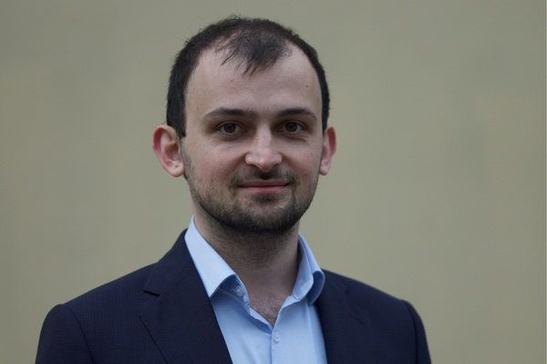

    <section id="about">
        <div class="container bg-light-gray">
            <div class="row">
                	<table style="width: 100%; border-collapse:separate; border-spacing:1em;">
                	  <caption><h2 class="section-heading text-center">About</h2></caption>
						<colgroup>
						   <col span="1" style="width: 85%;">
						   <col span="1" style="width: 15%;">
						</colgroup>
						<tbody>
							<tr>
								<td class="col-md-12 text-muted">
									<p>Hello and welcome to my website!</p>
									<p>My name is Mikhail Spektor and I am a behavioral scientist based in Barcelona.</p>
									<p>I hold a PhD in Psychology from the University of Basel and I'm currently Assistant Professor at the Department of Economics and Business at the Universitat Pompeu Fabra and Affiliated Professor at the Barcelona Graduate School of Economics.</p>
									<p>My main line of research focuses on the cognitive processes underlying individual decision making, in particular when choices violate classical notions of economic rationality. I investigate how individuals learn about the properties of choice alternatives and how value is represented. In my research, I rely on a combination of experimental, computational, and physiological methods.</p>
								</td>
								<td></td>
							</tr>
						</tbody>
					</table>
	        </div>
        </div>
    </section>
